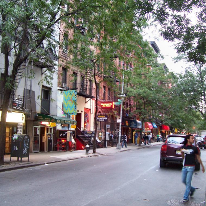
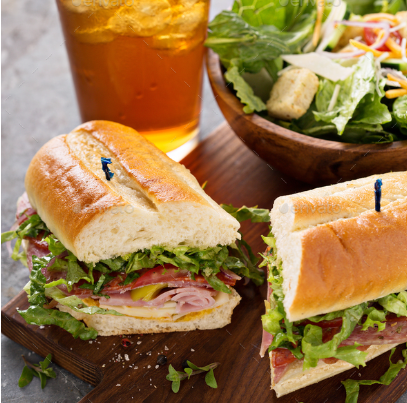
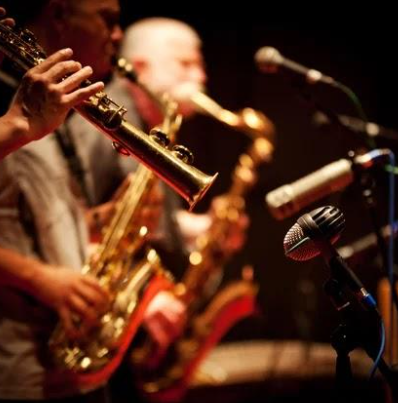

Sun - Thurs: 10:00 AM to 10:00 PM
Fri - Sat: 10:00 AM to 1PM

A popular and convenient precinct in
Greenwich Village.

The café has a great menu with a wide
range of beverages including coffees, wines, and beers.

Saturdays really rock with our great
selection of artists.
Not familiar with Greenwich Village? Then click below for more information.